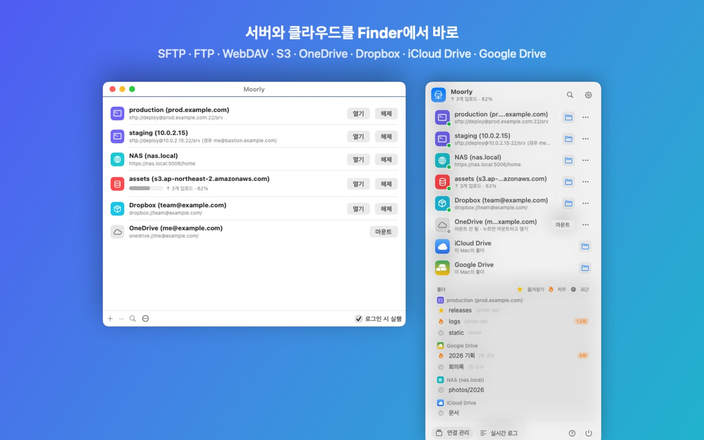
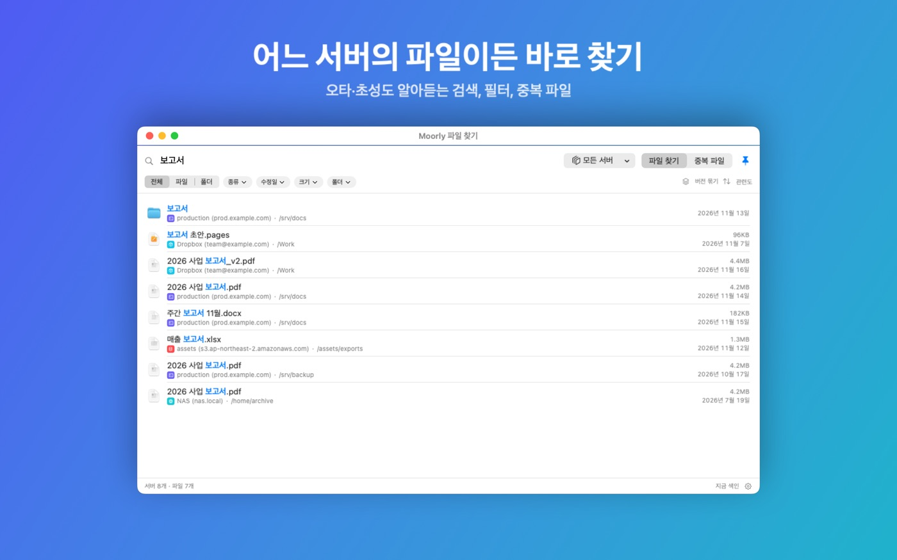
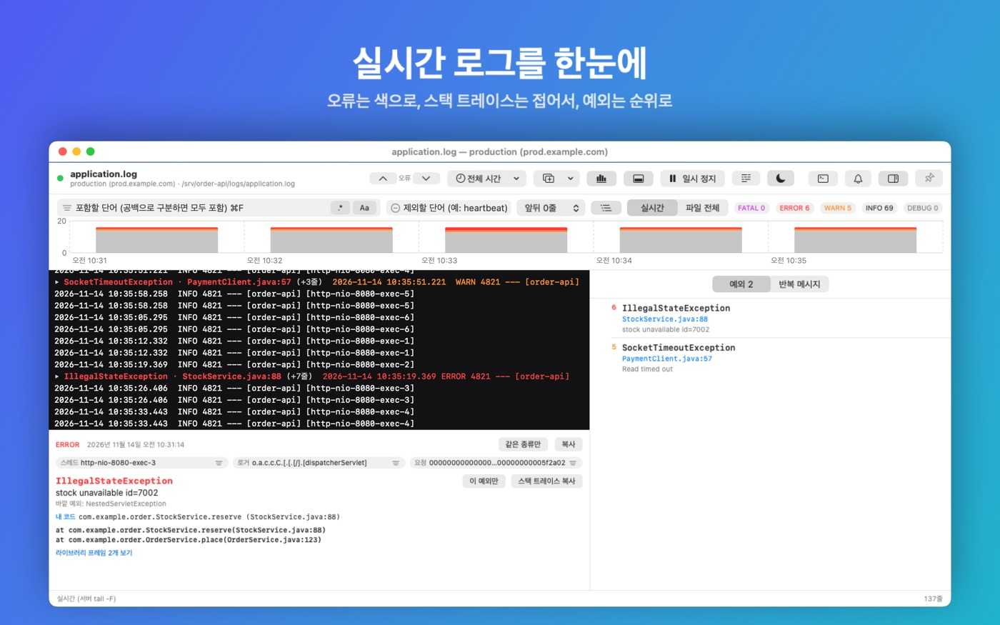

Moorly 사용 설명서
Moorly는 SFTP·FTP·WebDAV·S3 서버와 OneDrive·Dropbox를 Finder 사이드바에 붙여, 내 Mac의 폴더처럼 열고 저장하게 해 줍니다. iCloud Drive나 Google Drive 앱 폴더 같은 이 Mac의 폴더도 함께 다룰 수 있습니다.
시작하기

- 메뉴 막대의 Moorly 아이콘을 누르고 연결 관리를 엽니다.
- +(⌘N)를 누르고 연결할 서비스를 고릅니다.
- 서버(SFTP·FTP·WebDAV·S3): 주소, 사용자 이름, 암호나 키를 입력하고 연결 테스트 후 저장을 누릅니다.
클라우드(OneDrive·Dropbox): 계정으로 로그인…을 누르면 브라우저에서 로그인 페이지가 열립니다. 로그인과 권한 허용을 마치고 브라우저가 “Moorly 열기”를 물으면 열기를 누른 뒤, 이름을 확인하고 저장을 누릅니다. - 목록에서 마운트를 누르면 Finder 사이드바의 위치에 나타납니다.
~/.ssh/config의 서버 목록을 한꺼번에 가져옵니다. SFTP 서버는 처음 마운트할 때 서버를 확인합니다.SFTP 팁
- ~/.ssh/config에서 가져오기로 이미 쓰던 서버 설정을 불러올 수 있습니다.
- 경유 서버(점프 호스트)를 거쳐야 하면 고급 설정 › 경유 서버에 입력합니다.
- 서버 루트(
/)를 마운트하면/proc,/sys는 보이지 않습니다(계속 바뀌는 가상 폴더라서).
메뉴 막대 패널
메뉴 막대의 Moorly 아이콘을 누르면 패널이 열립니다. (오른쪽 클릭이나 ⌥클릭은 예전 메뉴)
- 서버 목록: 아이콘의 점 색깔 — 초록 마운트됨, 주황 문제 있음, 회색 마운트 안 됨. 줄을 누르면 마지막으로 보던 폴더가 열립니다. …에서 마운트 해제, 새로고침, 용량 분석, 터미널 열기 등.
- 폴더: 서버별로 ★ 즐겨찾기 · 🔥 자주 사용 · 🕘 최근 폴더. 폴더에 마우스를 올리면 ☆로 즐겨찾기에 넣거나 뺄 수 있습니다.
- 자주 사용은 최근 30일 동안 두 번 이상 연 폴더를 많이 연 순서로 보여 줍니다. 개수는 설정 › 메뉴에서 서버별로 정할 수 있습니다.
- Moorly가 연 폴더는 Finder의 ◀(뒤로)나 ⌘↑로 상위 폴더에 갈 수 있습니다.
서버가 많을 때: 트리·탭
설정 › 메뉴 막대 패널 › 보기에서 목록 · 트리 · 탭을 고를 수 있습니다.
- 그룹: 연결 편집 창의 그룹 칸이나 서버의 … › 그룹에서 정합니다(예: 운영, 개발). 그룹이 없는 서버는 서버(SFTP·FTP·WebDAV)와 클라우드(S3·OneDrive·Dropbox)로 자동으로 묶이고, 로컬 폴더는 따로 묶입니다.
- 트리: 그룹과 서버를 ▸로 접고 펼칩니다. 서버를 펼치면 그 서버의 즐겨찾기·자주 사용·최근 폴더가 바로 아래에 나옵니다. 접은 상태는 기억합니다.
- 탭: 위의 탭(전체, 그룹들)을 눌러 그 그룹의 서버와 폴더만 봅니다.
- 서버와 로컬 폴더가 9개 이상이면 위에 서버 이름으로 거르기 칸이 나옵니다. 목록이 화면보다 길면 패널 안에서 스크롤됩니다.
파일 끌어다 올리기
Finder에서 파일을 집어 들면 메뉴 막대 아이콘 아래에 작은 “Moorly로 업로드” 영역이 나타납니다. 파일을 그 위로 가져가면 서버별 폴더 목록이 펼쳐집니다.
- 폴더에 놓기: 그 폴더로 바로 올립니다. 같은 이름이 있으면 덮어쓰지 않고 “이름 2”처럼 바꿉니다.
- 서버 제목에 놓기: 올릴 위치를 고르는 창이 열립니다.
- 처음부터 목록 전체를 보려면 설정 › 드롭 패널 › 모양을 바꿉니다.
로컬 폴더 (iCloud Drive · Google Drive · Box · 공유 폴더)
이미 이 Mac에 있는 폴더를 서버처럼 함께 다룹니다. 최근·자주 사용·즐겨찾기, 파일 끌어다 놓기, 파일 찾기에 모두 들어갑니다.
- 설정 › 로컬 폴더 › 폴더 추가…를 누릅니다.
- 추가할 폴더를 고르고 이 폴더 추가를 누릅니다. (macOS 보안 때문에 폴더를 한 번 골라야 합니다)
| 넣고 싶은 것 | 고를 폴더 |
|---|---|
| iCloud Drive | iCloud Drive 추가… 버튼 (또는 ~/Library/Mobile Documents/com~apple~CloudDocs) |
| Google Drive | Google Drive 앱을 설치한 뒤 ~/Library/CloudStorage/GoogleDrive-계정 |
| Box · pCloud · MEGA | 각 앱을 설치한 뒤 그 앱이 만든 폴더 (대개 ~/Library/CloudStorage 안) |
| 회사 공유 폴더(SMB) | Finder에서 이동 › 서버에 연결로 연결한 뒤 /Volumes/공유이름 |
Finder 오른쪽 클릭 메뉴
마운트한 서버 폴더 안에서 파일이나 폴더를 오른쪽 클릭하면 Moorly: 항목이 나타납니다.
| 메뉴 | 대상 | 하는 일 |
|---|---|---|
| 실시간 로그 보기 | 파일 1개 | 서버의 로그를 tail -F처럼 실시간으로 |
| 같은 파일 찾기 | 파일 1개 | 여러 서버에서 내용이 같은 파일 찾기 |
| 터미널에서 열기 | 항목 1개 | 그 폴더로 들어간 ssh 세션 (SFTP) |
| 용량 분석 | 폴더 1개 | 어떤 폴더·파일이 공간을 차지하는지 |
| 즐겨찾기에 추가 | 폴더 1개 | 메뉴 막대 패널의 ★에 추가 |
| 공유 링크 복사 | 항목 1개 | S3·OneDrive·Dropbox의 공유 링크 |
| 서버에서 tar.gz/zip으로 압축, 압축 풀기, 복제 | 1개 이상 | 내려받지 않고 서버 안에서 바로 (SFTP) |
| 이 Mac에 항상 보관 / 보관 해제 | 1개 이상 | 미리 내려받아 두고 서버가 바뀌면 계속 받아 둡니다. 서버에 연결할 수 없어도 열 수 있습니다. 폴더를 고르면 안의 항목이 모두 따릅니다 |
서버 종류에 따라 할 수 없는 작업이면 이유를 알려 줍니다.
파일 찾기

메뉴 막대 패널의 🔍, 또는 어디서든 ⌃⌥⌘F. 열어 보지 않은 폴더의 파일도 이름으로 바로 찾습니다.
- 띄어쓰기·오타를 너그럽게, 한글 초성(
ㅂㄱㅅ), 한/영 전환을 잊고 친 글자(qhrhtj)로도 찾습니다. - 검색창 아래 전체 / 파일 / 폴더, 종류·수정일·크기·폴더로 거릅니다.
- 조건 쓰기:
ext:pdfsize:>100mbkind:폴더폴더:/var/logserver:개발 - 중복 파일 탭에서 여러 서버에 같은 파일이 있는지 봅니다.
- 창 오른쪽 위 📌를 켜면 다른 앱을 눌러도 창이 가려지지 않습니다.
- 색인 범위는 설정 › 파일 찾기에서 서버별로 정합니다. SFTP·FTP는
/usr,/proc,/var/log같은 운영체제 폴더를 건너뜁니다.
실시간 로그

메뉴 막대 패널 › 실시간 로그 › 로그 파일 열기…, 또는 Finder 오른쪽 클릭 › Moorly: 실시간 로그 보기.
- 경로 또는 이름:
/var/log/syslog처럼 경로를 넣거나,mmsc처럼 이름만 써서 아래 목록(최근 수정 순)에서 고릅니다. - 폴더를 넣으면 하위 폴더까지 뒤져 가장 최근에 바뀐 파일을 따라가고, 날짜가 바뀌어 더 새 파일이 생기면 30초 안에 넘어갑니다. 이름도 지정할 수 있습니다:
/app/log/*mmsc* - 서버를 여러 개 고르면 시간순으로 합쳐 보여 줍니다.
- 필터·제외 단어·앞뒤 줄, 오류 단계별 색, 반복 메시지 묶기, 시간별 그래프, 일시 정지(⌘P), 검은 바탕 🌙, 항상 위에 📌.
- 🔔 감시: 특정 단어나 오류 급증이 생기면 macOS 알림으로 알려 줍니다(창을 닫아도 계속).
tail -F로 거의 즉시 보입니다. 명령 실행이 막힌 계정이나 다른 서버 종류는 1.5초마다 늘어난 부분을 읽습니다.터미널 (iTerm2 · 터미널)
- 연결 목록에서 SFTP 서버를 오른쪽 클릭 › iTerm2에서 열기 (또는 패널의 …). 앱은 설정 › 터미널에서 고릅니다.
- 비밀번호 없이 접속 설정…: 이 Mac용 ssh 키를 만들어 저장하고(기본
~/.ssh/moorly_ed25519), 서버의~/.ssh/authorized_keys에 공개 키 한 줄을 넣습니다. 그다음부터 터미널로 열 때 비밀번호를 묻지 않습니다.
권한 안내 — 왜 묻나요?
| macOS가 묻는 것 | 이유 |
|---|---|
| “Moorly가 Finder를 제어하려고 합니다” | Finder 맨 앞 창이 어느 폴더인지 확인해 최근·자주 사용 폴더를 기록합니다. Finder가 앞에 있을 때만, 위치만 확인하고 파일은 건드리지 않습니다. 끄기: 설정 › 메뉴 › Finder에서 연 폴더 기록 |
| “Moorly가 iTerm2(터미널)를 제어하려고 합니다” | 서버를 터미널로 열 때 ssh 명령을 보냅니다. |
| 폴더 고르기 창 | 로컬 폴더, ssh 키 저장 위치처럼 Moorly가 접근할 곳을 직접 허락받습니다. |
| 알림 | 로그 감시 알림. |
허용을 거부했다면 시스템 설정 › 개인정보 보호 및 보안 › 자동화에서 바꿀 수 있습니다.
무료와 Pro
무료 버전은 연결 종류(SFTP, FTP, WebDAV, S3, OneDrive, Dropbox)마다 1개, 로컬 폴더 1개, 로그 감시 1개를 쓸 수 있고, 모든 기능을 쓸 수 있습니다. 한 번 구매하는 Moorly Pro(앱 내 구입)로 연결·로컬 폴더·로그 감시 개수 제한이 없어집니다.
자주 묻는 질문
OneDrive를 저장할 때 “이 계정에는 OneDrive가 없습니다”가 나와요
한 번도 OneDrive를 열지 않은 개인 계정입니다. 브라우저에서 onedrive.live.com에 한 번 로그인한 뒤 다시 시도하세요. 회사·학교 계정은 OneDrive(Microsoft 365) 사용권이 있어야 합니다.
회사 Microsoft 계정으로 로그인이 막혀요 (“관리자 승인 필요”)
회사 관리자가 외부 앱을 막아 둔 경우입니다. 관리자에게 Moorly 승인을 요청하세요.
목록에 경고(⚠︎)가 떠요
서버에 닿지 않았거나 로그인이 만료된 경우입니다. 패널의 서버 … › 다시 시도, 로그인 만료면 경고를 눌러 다시 로그인하세요.
최근 폴더에 Finder에서 연 폴더가 안 나와요
Finder 제어를 허용했는지 확인하세요(권한 안내). 패널에 주황 안내가 보이면 자동화 설정 열기를 누르세요.
오른쪽 클릭에 Moorly 메뉴가 없어요
Moorly로 마운트한 서버 폴더 안에서만 나타납니다. 로컬 폴더(iCloud 등)에는 나오지 않습니다.
경유 서버를 거친 SFTP가 안 돼요
경유 서버의 sshd에서 TCP 포워딩이 허용되어야 합니다(AllowTcpForwarding yes, 기본값). 호스트에는 경유 서버에서 보이는 주소를 넣으세요.
로그 감시 알림이 오지 않아요
시스템 설정 › 알림 › Moorly에서 알림을 허용하세요.
문의
이메일 giveing7777@gmail.com 또는 GitHub Issues로 macOS 버전과 증상을 알려 주세요. 암호나 서버 주소 같은 민감한 정보는 보내지 마세요.